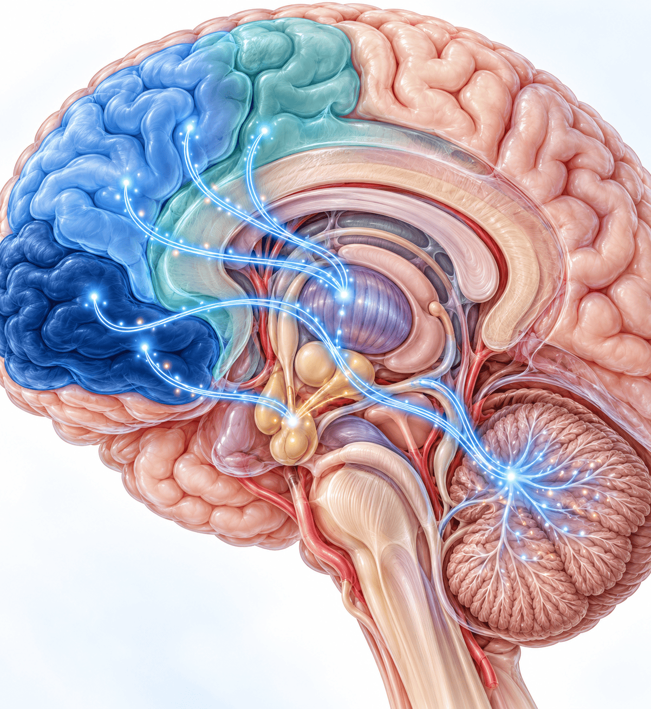

부주의·산만함으로 과제를 끝까지 이어가기 어렵다. 과제·놀이에 주의를 유지하지 못하고 쉽게 딴생각을 한다.
과잉행동·충동성 (Hyperactivity·Impulsivity)
안절부절·가만히 못 앉음·불쑥 행동으로 나타난다. 차례를 기다리지 못하고 질문이 끝나기 전에 대답한다.
핵심 개념
신경발달질환(neurodevelopmental disorder) — 의지·성격 문제가 아니라 뇌 발달의 차이
증상은 만 12세 이전에 시작 — 2013년 DSM-5에서 기준 변경, 대부분은 6세 이전에 시작
여러 상황에서 일관되게 나타남 — 가정·학교·직장
기능 손상이 동반될 때 진단 — 학업·대인관계·일상 기능에 실제 지장
주의가 떨어져도 학교생활에 큰 문제가 없으면 ADHD로 진단하지 않는다
아산 28회 연수강좌 — 소아 ADHD 진단과 치료의 최신 지견(김효원)
03 / 27
SECTION 01 · DSM-5 진단기준
DSM-5 진단기준: 두 증상군
부주의 9개 항목과 과잉행동·충동성 9개 항목으로 구성된다
부주의 (Inattention) 9개 항목
부주의한 실수가 잦음
과제·놀이에 주의 지속이 어려움
경청하지 않는 듯 보임
지시를 끝까지 따르지 못함
과제·활동 조직화의 어려움
지속적 집중을 요하는 일을 회피
물건을 자주 잃어버림
외부 자극에 쉽게 산만해짐
일상적인 일을 자주 잊음
과잉행동·충동성 9개 항목
손발을 만지작거리며 안절부절
자리에 앉아 있기 어려움
부적절하게 뛰어다니거나 기어오름
조용히 활동하기 어려움
끊임없이 움직임(모터 달린 듯)
말이 지나치게 많음
질문이 끝나기 전에 불쑥 대답
순서를 기다리기 어려움
자주 끼어들거나 방해함
DSM-5 변경점발병 연령 7세 → 12세로 완화 · 17세 이상은 각 증상군 5개 이상 · 자폐스펙트럼과 동반 진단 허용
각 증상은 여러 상황에서 나타나고 기능 손상이 동반될 때 진단한다
아산 28회 연수강좌 — 소아 ADHD 진단과 치료의 최신 지견(김효원)
04 / 27
SECTION 01 · 증상의 시간 경과
증상은 언제 시작하고 어떻게 변하는가
과잉행동·충동성은 줄어들고 부주의는 오래 남는다
증상은 만 12세 이전에 시작한다 — 2013년 DSM-5에서 기준이 바뀌었다
1단계
6세 이전
대부분의 아이에서 증상이 시작된다. 아주 이른 나이에 증상을 관찰할 수 있다.
2단계
초등학교 입학 전후
과잉행동·충동성이 가장 두드러진다.
3단계
청소년기
과잉행동·충동성은 점점 호전되어 많이 없어진다. 부주의 증상은 오래 남는다.
4단계
성인기
약 15–20%는 뚜렷한 증상이 성인기까지 지속된다.
진단 문턱
주의력이 떨어져도 학교생활을 잘하고 큰 문제가 없으면 ADHD로 진단하지 않는다. 학업·또래 관계·교사와의 관계·가정생활·놀이터 등 여러 환경에서 분명한 문제가 관찰될 때만 진단하고 약물치료도 한다.
나이가 들수록 조용한 ADHD, 즉 주의력 결핍형이 되기 쉽다
아산 28회 연수강좌 — 소아 ADHD 진단과 치료의 최신 지견(김효원)
05 / 27
SECTION 01 · 핵심 기전
ADHD의 본질: 실행기능의 발달 지연
증상 아래에는 전두엽과 함께 자라는 실행기능의 문제가 있다
반응 억제
말하기·행동하기 전에 멈춰 영향을 생각하는 능력. 다른 실행기능의 토대다.
시간 관리
마감까지의 시간을 가늠하고 배분한다.
계획·우선순위
순서를 정해 실행하고 계획대로 안 되면 수정해 다시 실행한다.
작업 기억
규칙·지시·해야 할 일을 머릿속에 잡아두고 활용한다. 주의력의 핵심 기능이다.
감정 조절
좌절·분노를 상황에 맞게 다룬다. 약하면 사소한 일에 욱하고 감정 기복이 크다.
정리·조직화
과제·자료·환경을 정돈한다. 가방·책상·수첩이 엉망일 수 있다.
ADHD의 본질
실행기능의 발달 지연
(executive function)
단순한 주의력 부족이 아니라 행동을 스스로 조절·계획·실행하는 뇌의 관리 기능이 또래보다 늦게 발달하는 상태. 실행기능은 뇌 전체를 지휘하는 지휘자와 같다.
ADHD 아이들은 실행기능의 발달이 또래보다 느리다
아산 28회 연수강좌 — 소아 ADHD 진단과 치료의 최신 지견(김효원)
06 / 27
SECTION 01 · 임상 표현
ADHD의 다양한 임상 표현
실행기능의 약점이 일상 행동으로 드러나는 네 가지 모습
계획을 세우지 못한다
하루 종일 그때그때 할 일과 놀고 싶은 것을 하다가 잠자기 전에 숙제를 시작한다. 빠뜨리거나 변명·핑계를 대기도 한다.
보상에 대한 반응이 남다르다
좋아하는 일에는 과몰입(게임 4시간, 레고 2시간)하지만 이것도 집중 조절의 어려움이다. 기말고사 후 보상처럼 지연된 보상을 생각하며 꾸준히 노력하기는 어렵다.
충동적이고 잘 부딪힌다
반응 억제가 안 되어 말·행동·답안 선택 전에 멈춰 보지 않는다. 쉽게 화를 내고 시비를 걸어 싸움이 잦아진다.
조용한 ADHD도 있다
과잉행동·충동성이 두드러지지 않고 느리고 멍하게 있다가 할 일을 마치지 못하며 위축되기도 한다. 나이가 들수록 주의력 결핍형이 되기 쉽다.
좋아하는 일에 오래 몰입하는 것이 집중력이 좋다는 뜻은 아니다
아산 28회 연수강좌 — 소아 ADHD 진단과 치료의 최신 지견(김효원)
07 / 27
SECTION 01 · 놓치기 쉬운 ADHD
과잉행동이 없으면 진단을 놓치기 쉽다
세 집단은 진단이 늦어지므로 주의 깊게 살핀다
지능이 좋은 아이
높은 지능으로 증상을 보완해 학령 초기에는 드러나지 않다가 과제량이 늘면 뒤늦게 표면화된다.
여자 아이
과잉행동보다 부주의·내재화 증상이 많아 '조용한 아이'로 여겨져 진단과 치료가 지연되기 쉽다.
부주의 우세형
겉으로 얌전해 문제 행동이 없어 보이지만 집중 유지와 과제 완수의 어려움이 지속된다.
내과 진료 포인트
조용한 부주의형, 여아, 지능이 좋은 아이는 늦게 드러난다. 이런 아이들은 주의 깊게 관찰하고 성인 ADHD도 염두에 둔다.
연자는 여아의 부주의형이 많아 과소진단되는 경향이 있다고 설명했다
아산 28회 연수강좌 — 소아 ADHD 진단과 치료의 최신 지견(김효원)
08 / 27
SECTION 02 · 얼마나 흔한가요?
흔하고, 오래 지속된다
소아·청소년에서 가장 흔한 신경발달질환의 하나
5–8%
학령기 소아
전 세계 어느 나라에서나 비슷하다. 초등학교 1학년 한 반에 한두 명, 많으면 세 명 정도.
약 2.5%
성인
전두엽 발달이 또래를 따라잡는 경우가 많아 나이가 들수록 유병률이 줄어든다.
3–4 : 1
남 : 여 (소아)
여아는 부주의형이 많아 과소진단되는 경향이 있다.
경과의 핵심
과잉행동·충동성은 나이가 들며 줄지만 부주의 증상은 오래 남는다. 약 15–20%는 성인기까지 뚜렷한 증상이 지속된다.
연자의 설명
약물치료를 잘하면 성인기까지 증상이 남을 가능성이 줄어든다. 자폐스펙트럼장애·난독증 등 뇌 발달 지연 질환도 대부분 남아에서 더 많다.
과잉행동·충동성은 줄고 부주의 증상은 성인기까지 이어진다
아산 28회 연수강좌 — 소아 ADHD 진단과 치료의 최신 지견(김효원)
09 / 27
SECTION 03 · 왜 생기나요?
유전이 큰 비중을 차지한다
유전율 약 75%, 친형제와 입양 형제의 비교가 이를 보여 준다
유전율
≈ 75%
유전적 요인이 기여하는 비중은 70–80%라고 설명했다. 임상 증상 아래 뇌 발달 지연의 대부분이 유전과 관련된다.
친형제
일반 유병률의 4–5배
입양 형제
일반 유병률과 유사
큰 영향의 유전자 하나
뇌 발달 전체에 큰 영향을 줘 자폐스펙트럼장애·지적장애처럼 또래와 많이 다른 형태로 나타난다.
ADHD: 작은 힘의 조합
키나 지능처럼 많은 유전자가 각각 작은 힘을 갖고, 조합에 따라 전전두엽 발달이 늦어진다.
유전적 요인은 전전두엽 발달을 늦추는 방식으로 작용한다
아산 28회 연수강좌 — 소아 ADHD 진단과 치료의 최신 지견(김효원)
10 / 27
SECTION 03 · 신경생물학
전전두엽-선조체 회로와 신경전달
작은 전두엽 영역마다 기능이 다르고 회로로 연결되어 있다

대뇌 측면 모식도 — 전두엽 아래·바깥·안쪽 영역과 선조체·소뇌·시상하부를 잇는 회로
전전두엽–선조체 회로의 기능 저하
주의·실행기능을 담당하는 신경회로의 활동성이 또래보다 낮다. 전두엽과 선조체·소뇌·시상하부가 회로로 연결되어 작용한다.
도파민(DA)·노르에피네프린(NE) 신경전달
DA는 실행기능·판단·반응 조절에, NE는 자극의 선별과 집중 유지에 주로 관여한다. 이 물질들의 불균형과 연관된다.
전두엽 영역별 기능
아래쪽(inferior frontal cortex)은 충동 억제·감정 조절, 바깥쪽은 집중 유지, 안쪽은 다른 사람의 마음을 이해하는 능력을 담당한다.
ADHD의 원인은 전두엽과 연결된 회로의 발달이 느린 것이다
아산 28회 연수강좌 — 소아 ADHD 진단과 치료의 최신 지견(김효원)
11 / 27
SECTION 03 · 위험요인
위험요인과 흔한 오해
유전 외 요인은 뇌 발달 손상이나 증상 조절 요인으로 작용한다
기질적 위험요인
임신 중 음주, 저체중·미숙아, 주산기 손상은 뇌 발달에 큰 영향을 주어 ADHD가 생길 수 있다.
환경·심리사회적 요인
대부분 환경 때문에 ADHD가 생기지는 않는다. 학대·방임은 주의력이 떨어지는 양상으로 나타날 수 있고, 증상을 조절·악화시키는 요인으로 작용한다.
흔한 오해
"부모가 잘못 키워서 ADHD가 됐겠죠"
바로잡기
ADHD는 유전·신경생물학적 질환이다. 양육 방식은 원인이 아니며 비일관적 훈육 등은 증상에 대응하는 과정에서 생긴 2차적 양상이다. 다만 치료 과정에서 양육 환경을 함께 조정하는 것은 중요하다.
단독 환경 개선만으로 근본 해결은 어렵다는 점을 함께 설명한다
아산 28회 연수강좌 — 소아 ADHD 진단과 치료의 최신 지견(김효원)
12 / 27
SECTION 03 · 발달 관점
전전두엽 성숙의 지연: 결함이 아니라 늦됨
연자가 인용한 대뇌피질 성숙 시점 연구(Shaw et al., 2007)
정상 발달
ADHD
Shaw et al., 2007
ADHD 아동은 대뇌피질 성숙의 정점이 약 2–3년 늦게 도달한다.
결함이 아니라 늦됨
발달이 늦을 뿐 결국 또래의 뇌 발달을 따라잡는다. 전두엽 발달이 또래와 비슷해지는 시기는 대개 20대 초반까지다.
치료하지 않으면
20대 초반까지 전전두엽 발달 지연이 계속되어 주의력 결핍·학업·실행기능 문제가 남는다.
그림은 연구에서 보고된 성숙 정점의 지연을 도식화한 것이다
아산 28회 연수강좌 — 소아 ADHD 진단과 치료의 최신 지견(김효원)
13 / 27
SECTION 04 · 어떻게 진단하나요?
단일 검사로 진단할 수 없다
피 검사로 진단하는 병이 아니므로 여러 정보원을 종합한다
1면담
아동 1:1, 부모·담임교사 등 다정보원 면담. 학교 선생님의 기록이나 영상도 활용한다.
2행동 관찰
충분한 시간에 걸친 직접 관찰. 진료실에서 가만히 있지 못하고 들락날락하는 모습도 본다.
3평가 척도·설문지
부모·교사용 평가척도: ADHD 평가척도, 코너스, CBCL.
4심리·신경인지 검사
지능검사, 종합주의력검사(ATA·CAT) 등 보조적 평가. 지능 수준을 함께 감안해 해석한다.
진단
전문의의 종합적 임상 판단
진단 원칙
한 번 보고 진단하지 않는다 — 충분히 관찰한다
단일 검사로 진단하지 않는다
MRI·뇌파 등 뇌영상만으로 진단할 수 없다
여러 상황(가정·학교)의 정보를 통합한다
내과 진료 포인트 의심되면 소아청소년정신과 전문의에게 의뢰한다.
아이를 직접 보고 부모·담임교사 등에게서 정보를 모은다
아산 28회 연수강좌 — 소아 ADHD 진단과 치료의 최신 지견(김효원)
14 / 27
SECTION 04 · 동반질환
ADHD는 혼자 오지 않는다
대부분 다른 정신과적 문제와 함께 나타난다
주요 동반질환 (개념적 비율)
적대적 반항장애
불안장애
학습장애
기분장애
품행장애
MTA 연구 · 동반질환은 경과와 치료 반응에 큰 영향을 준다
행동 문제
공격적인 행동, 말을 안 듣거나 반항
정서 문제
자신감 저하, 우울
대인관계 문제
눈치 없는 행동으로 또래 관계가 곤란
학업 문제
미루기, 과제 미제출
ADHD 자체뿐 아니라 동반되는 문제도 함께 돕는다
아산 28회 연수강좌 — 소아 ADHD 진단과 치료의 최신 지견(김효원)
15 / 27
SECTION 04 · 경과와 예후
치료하지 않으면 어떻게 되나요?
성인기까지 이어지는 경과와 치료군·비치료군의 차이
증상의 자연 경과
학령전기
과잉행동이 두드러진다.
증상의 자연 경과
학령기
부주의·충동성이 표면화된다.
증상의 자연 경과
청소년기
과잉행동은 감소하고 부주의는 지속된다.
증상의 자연 경과
성인기
15–20%에서 증상이 지속된다.
치료하지 않으면
시간이 갈수록 부정적 피드백을 받아 자존감이 떨어진다
학습 부진·대인관계 부적응·정서 불안정이 이어질 수 있다
청소년기까지 지속되면 품행장애 위험이 증가한다
품행장애 소아의 약 50%는 성인기 반사회적 인격장애로 이어진다
치료하면
과잉행동이 가장 먼저 호전되고 주의력 결핍도 좋아진다
학업·대인관계·자존감 등 여러 영역에서 치료군이 비치료군보다 더 나은 결과를 보인다
조기 발견과 개입이 예후를 좌우한다
연자는 치료군이 비치료군보다 더 나은 결과를 보인다고 설명했다
아산 28회 연수강좌 — 소아 ADHD 진단과 치료의 최신 지견(김효원)
16 / 27
SECTION 05 · 어떻게 치료하나요?
다면적 접근이 원칙
약물치료가 일차치료이며 약물만으로 치료하지 않는다
약물치료 — 일차치료
효과가 입증된 일차치료. 핵심 증상(주의력 결핍·과잉행동·충동성)과 실행기능을 호전시킨다.
부모교육
반드시 병행한다. 약물교육과 부모 양육훈련으로 훈육·돌봄·사회성·학습 지도 방법을 함께 배운다.
정신사회적 치료
동반 문제에 따라 인지행동치료·사회기술훈련·가족치료를 병합한다.
학습·교육적 지원
학교 환경 조정과 학습 전략을 함께 마련한다. 학업 어려움이나 난독증이 동반될 때 필요하다.
약물 효과가 워낙 좋아 일차치료이지만 부모교육을 꼭 함께 한다
아산 28회 연수강좌 — 소아 ADHD 진단과 치료의 최신 지견(김효원)
17 / 27
SECTION 05 · 약물치료
두 갈래의 약물: 자극제와 비자극제
자극제를 먼저 쓰고 부작용이나 동반 문제가 있으면 비자극제를 쓴다
중추신경자극제 (Stimulants)
비중추신경자극제 (Non-stimulants)
대표 약제
메틸페니데이트 — 콘서타·메디키넷·페니드
아토목세틴(스트라테라) — NE 재흡수 억제제 클로니딘(켑베이) — 그 외 약물
효과·작용
약 70–85%에서 효과. 효과가 빠르고 강력해 일차 선택약. 복용 당일부터 작용하고 제형에 따라 작용시간 조절
자극제보다 효과는 덜하나 부작용도 덜함. 효과까지 최소 2주 이상 소요. 한번 작용하면 24시간 효과 지속
주요 이상반응
식욕저하·불면·두통·복통
대부분 자극제보다 덜함. 아토목세틴은 약간의 오심이 있어 연자는 저녁에 처방. cytochrome 2D6로 대사되어 poor metabolizer는 구토할 수 있으나 아시아인에는 별로 없는 것 같다고 했다
선택 상황
부작용이 없으면 먼저 사용
부작용이 있거나 예상되는 아이(틱·불안 동반)에 사용. 남용 위험이 낮음
자극제 효과가 너무 좋아 부작용만 없으면 이쪽을 먼저 쓴다
아산 28회 연수강좌 — 소아 ADHD 진단과 치료의 최신 지견(김효원)
18 / 27
SECTION 05 · 메틸페니데이트
메틸페니데이트 제제는 작용시간과 제형으로 고른다
국내 세 제제의 작용시간과 복용 형태
페니드
가루약으로 만들 수 있다
메디키넷
캡슐이지만 열어서 먹어도 된다
콘서타
열어서 먹을 수 없다
작용시간이 길수록 약효는 순하고 부작용도 덜하며 혈중농도가 천천히 올랐다 떨어진다. 일부 보호자는 오전 복용 후 학교에서 바로 차분해지는 짧고 강력한 약을 더 좋다고 생각한다. 작용시간과 제형을 함께 보고 처방한다.
페니드 · 가루메디키넷 · 캡슐콘서타 · 통째로
약 70–85%에서 효과가 있고 빠르고 강력해 일차로 선택한다
아산 28회 연수강좌 — 소아 ADHD 진단과 치료의 최신 지견(김효원)
19 / 27
SECTION 05 · 약물 안전성
메틸페니데이트: 내과의가 알아야 할 점
시작 전 점검과 투약 중 모니터링 네 가지
반응률
70–85%
적정 용량에서 핵심 증상이 뚜렷이 호전되는 비율
심혈관계 점검 (가장 중요)
혈압·맥박을 각각 3–4 올린다. 정상 발달 아이는 대부분 문제없다. 부정맥·구조적 심기형·가족력(돌연사)을 확인하고 기왕력이 있으면 신중히 평가한다. 성인은 원래 고혈압 등이 있어 조심한다.
틱·경련 역치
틱을 악화시킬 수 있고 경련 역치를 낮춘다. 틱이나 경련이 있는 아이는 항상 조심하며 동반 시 비자극제를 고려한다.
성장 모니터링
초기 식욕저하로 일시적 성장지연이 가능하다. 키·체중을 정기적으로 기록하며 대부분 회복세를 보인다.
복용 관리
흔한 이상반응은 식욕저하·불면·두통·복통이다. 필요하면 용량을 조절하거나 약물을 변경한다.
연자는 약이 효과적이고 안전하지만 초반 부작용 조절이 필요하다고 정리했다
아산 28회 연수강좌 — 소아 ADHD 진단과 치료의 최신 지견(김효원)
20 / 27
SECTION 05 · 보호자의 두 질문
보호자가 가장 궁금해하는 두 가지
치료 기간과 성장에 대해 강의가 제시한 답과 근거
Q. 한번 시작하면 평생 먹나요?
아니요. 정기적으로 재평가합니다.
보통 1년마다 효과·필요성을 종합 재평가한다 (NICE, 2008)
효과가 유효하면 지속하고 호전·안정되면 감량·중단을 시도한다
장기 치료가 미치료보다 여러 기능 영역에서 더 나은 결과와 연관된다
Q. 성장에 방해되지 않나요?
대부분 큰 문제 없습니다.
초기 식욕저하로 일시적 성장지연이 가능하다 (용량의존적)
개인차가 크고 약 3년이 지나면 회복세를 보인다
장기 복용 후 최종 성인 신장은 대체로 정상 범위다
키·체중 백분위수를 항상 기록하고 지연 시 약물 휴일을 고려한다
연자 병원 자료메틸페니데이트와 아토목세틴 모두 초반에 약간 성장이 지연되는 듯하나 결국 원래 백분위수로 따라잡는다. 초반 식욕저하가 너무 두드러지면 다른 약으로 바꾼다.
재평가 주기는 NICE 2008, 성장은 연자 병원 데이터와 교재 자료
아산 28회 연수강좌 — 소아 ADHD 진단과 치료의 최신 지견(김효원)
21 / 27
SECTION 05 · 약물치료와 뇌 발달
약물치료와 전두엽 발달
연자가 설명한 시작·유지·중단의 흐름과 인용한 추적관찰 연구
연자의 관점 — 약은 증상 조절뿐 아니라 전두엽 발달을 촉진하는 치료약이다
1시작 시점
초등학교 입학 전 2학기 10월이 가장 적절하다고 설명했다. 문제아로 낙인찍히기 전에, 부모가 약 맞추는 과정을 잘 관찰할 수 있을 때 시작한다.
2초반 적응
부작용이 많고 요란하지만 보호자 눈에 안 보이는 부작용은 없고 끊으면 다음 날 없어진다. 장기 복용 중 갑자기 생기는 부작용은 없어 초반에 맞는 약을 찾는 과정이 중요하다.
3복용 유지
전두엽 발달이 또래와 비슷해질 때까지 정기적으로 복용한다. 미국·유럽 추적관찰 연구에서 약을 먹은 아이가 더 빠르게 또래와 비슷해졌다.
4중단
경험적으로 빨리 먹을수록, IQ가 좋을수록 약을 빨리 끊을 수 있다. 일찍 시작해서 빨리 끊는다.
약 효과 — 과잉행동·주의력 결핍·충동성이 좋아지고 학업·또래 관계·자존감 등 여러 영역에서 호전된다. 약 먹은 날과 안 먹은 날 알림장 글씨가 다르다고 말하는 보호자도 있다.
연자는 ADHD 약의 효과가 드라마틱하게 나타난다고 설명했다
아산 28회 연수강좌 — 소아 ADHD 진단과 치료의 최신 지견(김효원)
22 / 27
SECTION 05 · 정신사회적 치료
약물 효과를 키우는 비약물 치료
부모교육·인지행동치료·사회기술훈련·가족치료
부모교육
ADHD에 대한 이해, 긍정적 관심과 일관된 지침, 칭찬과 양육 기술 교육.
인지행동치료
행동 전 '생각-스톱'하기, 자기감시 훈련, 토큰 강화.
사회기술훈련
또래와 어울리기, 감정 인식·조절, 갈등 다루기를 집단으로 연습.
가족치료
가족 갈등이 문제를 키울 때 의사소통과 가족 기능을 함께 개선.
약물 효과를 키우는 비약물 치료 — 약물의 한계를 보완하고 동반 문제를 다루기 위해 병합한다. 우울·사회성 문제·충동성이 있으면 인지행동치료·사회기술훈련(대개 그룹)·가족치료를 함께 한다.
학업 어려움이나 난독증이 있으면 학습·교육적 지원도 필요하다
아산 28회 연수강좌 — 소아 ADHD 진단과 치료의 최신 지견(김효원)
23 / 27
SECTION 06 · 연자 Q&A (1)
질의응답: 식욕저하·병용 약물·반응 불량
Q&A 모음집에 실린 연자의 답변
연자 Q&A
식욕저하와 늘어짐이 있을 때 용량·작용시간 조절
연수강좌 질의응답에서 연자는 효과가 있는데 식욕부진이 있으면 식욕을 돕는 약을 함께 처방하면 호전되는 아이들이 있다고 답했습니다. 그래도 호전되지 않으면 약물 휴일을 갖거나 주말에 지속시간이 짧은 약물을 처방한다고 했습니다.
연자 Q&A
ADHD 약 복용 중 함께 처방하는 내과 약
소아에서는 교감신경을 항진시키는 약들만 주의하면 된다고 답했습니다. 에나폰은 약물 상호작용과 부작용이 많아 요즘은 SSRI 계열로 대체하며, SSRI는 ADHD 약물과 같이 써도 대부분 안전하다고 했습니다. Wellbutrin이나 에나폰 같은 약은 교감신경계에 작용해 ADHD 약물과 잘 같이 쓰지 않는다고 했습니다.
연자 Q&A
약물을 병용해도 과잉행동·문제 행동이 교정되지 않을 때
연자는 ADHD에 동반된 다른 문제가 있을 수 있다고 답했습니다. 다시 평가하고 부모교육·사회성치료·놀이치료 같은 치료가 필요한지 상의하도록 했습니다.
아래 내용은 연자가 질의응답에서 답한 것이다
아산 28회 연수강좌 — 소아 ADHD 진단과 치료의 최신 지견(김효원)
24 / 27
SECTION 06 · 연자 Q&A (2)
질의응답: 전두엽 발달과 성인기 경과
가장 큰 추적관찰 연구인 MTA 연구에 대한 연자의 답
연자 Q&A
약물치료가 전두엽 발달에 필요한가, 성인기에는 어떻게 되는가
연자는 약물치료를 하면 하지 않을 때보다 전두엽 발달이 또래와 비슷해지는 시기가 현저히 빠르다고 답했습니다. 약물치료 동안 주의집중력·과잉행동·충동성·감정조절이 호전되어 학습·또래·어른과의 관계에도 좋은 영향을 준다고 했습니다. 즉 약물이 증상 조절 효과와 전두엽 발달 촉진 효과를 모두 가진다고 연자는 설명했습니다.
약을 먹었을 때 성인기 증상이 얼마나 줄어드는지에 대한 장기추적관찰 연구는 아직 없다고 했습니다. 다만 약물을 먹지 않은 아이보다 전두엽 발달이 빠르다는 연구가 여럿 있어 성인 ADHD로 남는 비율이 현저히 낮을 것으로 생각한다고 답했습니다.
MTA 연구 (Q&A)
약 90%
ADHD에 대한 가장 큰 추적관찰연구인 MTA 연구에서 아동기 ADHD 환자가 성인기에도 부분적이거나 완전한 증상 및 기능적 어려움을 겪었다.
강의 본문
15–20%
성인기까지 뚜렷한 증상이 지속되는 비율. 약물치료를 잘하면 남을 가능성이 줄어든다고 설명했다.
약 복용 시 성인 ADHD로 남는 비율이 줄 것으로 본다는 연자의 견해
아산 28회 연수강좌 — 소아 ADHD 진단과 치료의 최신 지견(김효원)
25 / 27
SECTION 06 · 연자 Q&A (3)
질의응답: 성인 ADHD·약물 중단·지능
성인기 이후의 약물 사용과 중단에 대한 연자의 답
연자 Q&A
성인 ADHD에서의 약물
성인에서는 작용시간이 긴 콘서타를 가장 많이 쓴다고 답했습니다. 성인 ADHD로 진단받고 약을 시작해 큰 효과를 본 사람은 신경전달물질(도파민·노르에피네프린) 불균형이나 전두엽 실행기능 저하가 이미 만성화된 경우가 많다고 했습니다. 또 성인의 사회적·직업적 요구(업무 수행, 시간 관리, 대인관계 유지)가 아동기보다 훨씬 복잡해, 자연적인 뇌 발달로 절로 약을 끊게 되는 시기를 기대하기 어렵다고 답했습니다.
연자 Q&A
약을 중단할 수 있는 경우
인지치료나 달력·알람·업무 분할 같은 생활 조정으로 약물 없이도 업무와 일상을 관리할 수 있거나, 주의집중이 덜 필요한 업무·환경으로 바뀌면 약을 중단할 수 있다고 답했습니다.
연자 Q&A
최종 지능 수준
어디까지 올라갈지는 개인차·기저 증상·치료 시작 시기에 따라 달라 예측하기 어렵다고 답했습니다. 치료 전에는 능력을 발휘하지 못해 저평가되기도 하고 투약으로 인지기능이 개선되어 지능이 오르는 경우를 자주 본다고 했습니다.
연자는 지능이 오르는 경우를 자주 본다고 답했다
아산 28회 연수강좌 — 소아 ADHD 진단과 치료의 최신 지견(김효원)
26 / 27
SECTION 06 · 핵심 복습
내과 진료에서 기억할 5가지
발달 · 경과 · 약물 안전성을 진료와 연결한다
1의지가 아니라 발달
ADHD는 실행기능의 발달이 늦은 신경발달질환이다. 성격·훈육 탓이 아니다.
2놓치기 쉬운 대상
조용한 부주의형, 여아, 지능 좋은 아이는 늦게 드러난다. 성인 ADHD도 염두에 둔다.
3진단은 종합 판단
단일 검사·뇌영상으로 진단할 수 없다. 의심되면 소아청소년정신과로 의뢰한다.
4약물은 효과적·안전
자극제 70–85% 반응. 시작 전 심질환 병력·가족력을 확인하고 키·체중을 모니터링한다.
5조기 개입이 예후를 바꾼다
동반질환을 함께 보고 약물·부모교육·정신사회적 치료를 병행한다.
광교바른내과
소화기내과 · 일반내과 · 5대암 검진 평일 08:30~18:30 · 토 08:30~13:30 경기도 용인시 수지구 광교중앙로 298, 4층 402-404호 031-893-4560